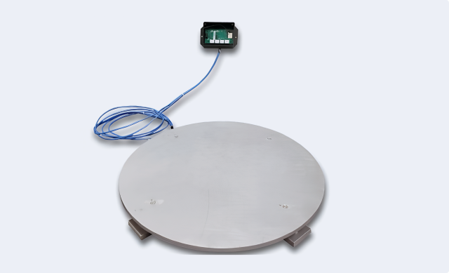

<section class="section hero hero-remote">
<div class="container">
    <div class="hero-desc">
        <h6 class="hero-subtitle h6" data-load-order="1" >IoT Remote Sensors</h6>
        <h1 class="hero-title h2" data-load-order="2" >Welcome to Design Criteria, where we lead the way in remote smart sensor technology for electrical systems. We design and manufacture remote sensors for IoT applications, catering to both smart home and business environments.</h1>
        <div class="hero-wrap" >
            <div class="hero-media" data-load-order="3">
                <picture>
                    <source srcset="../../img/home/hero-product.png" type="image/png">
                    <source srcset="../../img/home/hero-product.webp" type="image/webp">
                    
                </picture>
            </div>
            <div class="hero-inner">
                <div class="hero-text" data-load-order="3">
                    <h4>Our expertise lies in seamlessly integrating these advanced sensors to provide:</h4>
                    <ul>
                        <li>Real-time monitoring and optimization capabilities</li>
                        <li>Intuitively designed application tools for precise and efficient remote system tracking</li>
                        <li>State-of-the-art technology that ensures an extended lifespan</li>
                    </ul>
                </div>
            </div>
        </div>
    </div>
</div>
</section>